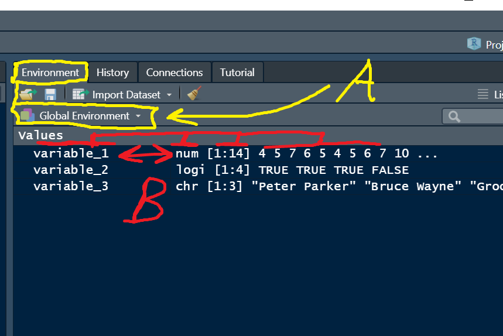

04 Data objects

1 Data objects in R
By the end of this lesson, you will be able to:
- Describe basic data types
- Use
str()to inspect data objects - Describe data with factors
- Use
class()and convert variable types - Use vector and matrix functions to manipulate data
Imagine you are floating in space in the R Global Environment and any data object you can see, you can call on by name to manipulate with functions. Let’s call it
RSpace
The fundamental way to analyse data in R is to be able to manipulate it with code. In order to do that, we need a system of containers to store the data in. This page is about the rules used for storing data in data objects. We will examine basic data types at the same time as how R stores them. R is actually very flexible in the way it handles data, making it as easy as possible for non-programmers to get going.
2 Basic data types, str()
2.1 Storage containers types
The first things to examine are the way that R variables are named, and the organization system for storing the data. The organization part is particularly important, because it is used to actually access and use data.
Variable names in R are simple and do not need to be “declared” like in some computing languages, and they can be almost anything, but there are a few rules. The R system has a built-in error message and warning message system (also known as the Passive-Aggressive Butler), which will usually give a hint when some of these rules are violated.
2.2 The Global Environment
One of the things we notice when people begin using R, even if they are experienced in data analysis, is that they expect to “see” data and data sets, almost as they are physical things. This might be because of experience using Excel and seeing the visual representation of data in spreadsheets (indeed, a graphical representation of physical spreadsheets!).
The regular R system for interacting with data is a little more abstract which can be disconcerting to new users. Typical use is to create variables in code script files and, usually, the bring data into the Global Environment from external files on the local PC, or from the web. We will practice using the Global Environment is the main way to interact with data.
You can use the class() function to find out the variable type (using this this is a good idea, since R occasionally guesses the intended data type incorrectly).
# Try this
variable_1 <- c(4,5,7,6,5,4,5,6,7,10,3,4,5,6) # a numeric vector
variable_2 <- c(TRUE, TRUE, TRUE, FALSE) # a logical vector
variable_3 <- c("Peter Parker", "Bruce Wayne", "Groo the Wanderer") # a character vector
class(variable_1) # "numeric"
class(variable_2) # "logical"
class(variable_3) # "character"Look at the upper right pane of your RStudio and you should see something like:

The Environment tab contains the Global Environment (labelled A in the picture above). There are some other tabs, but we will ignore these for now. The Global Environment itself contains information about the variables that are held in memory. If we think of this as “R Space”, a general rule is that if you can see a variable here in the Global Environment, you can manipulate it and work with it.
Notice that there is quite a lot of information in the Global Environment about the actual variables (B in the picture). There is a column with the variable NAME (variable_1, variable_2, etc.), a column with the variable TYPES (num, logi, etc.), a column with the variable dimensions ([1:14] is an index like a unique “street address” for each of the 14 numeric values contained in “variable_1”)
2.3 Naming conventions for variables
Variable names:
Can contain letters, numbers, some symbolic characters
Must begin with a letter
Must not contain spaces
Some forbidden characters like math operators, “@”, and a few others
Should be human-readable, consistent, and not too long
Case sensitive
# Try this
## Variable name rules ####
# Can contain letters, numbers, some symbolic characters
x1 <- 5 # OK
x2 <- "It was a dark and stormy night" # OK
my_variable_9283467 <- 1 # technically works, but hard to read
# Must begin with a letter
varieties <- c("red delicious", "granny smith") # OK
x432 <- c("a", "b") # OK
22catch <- c(TRUE, TRUE, FALSE) # nope
# Must not contain spaces
my_variable <- 3 # OK
my.variable <- 4 # OK
myVariable <- 5 # OK
my variable <- 6 # nope
"my variable" <- 7 # nope
# Must not contain forbidden characters like
# math operators, "@", and a few others
my@var <- 1 # nope
my-var <- 1 # nope
my=var <- 1 # nope
# etc.
# Should be human-readable, consistent, and not too long
Diameter_Breast_Height_cm <- c(22, 24, 29, 55, 43) # legal but too long
DBH_cm <- c(22, 24, 29, 55, 43) # much better
#Case sensitive
height <- c(180, 164, 177) # OK
Height # Error: object 'Height' not found (notice capital H)
height # OK3 Data with factor()
Sometimes you will need to analyze data that is a factor, where the different values are categories. Factors in R can be a cause for confusion, but there needn’t be problems if you understand them. The information here is a starting point, and we skip some complexities, but essentially
3.1 Two types of factors, non-ordered and ordinal
Non-ordered factors are simply categories and the levels are simply the names of the categories. By definition, non-ordered factor do not have a specific order! an example here might be plant varieties.
Ordered factors have a specific order, which can be important for analysis or for graphing. You usually have to specify the order explicitly to get this right. An example here might be the days of the week, where the order of day is important.
4 Class() and converting variables
We use the class() function to query what data category a variable is set too. R is pretty good at setting this correctly, but it is a good idea to check sometimes and occasionally you will have to manually set variable characteristics.
# try this
# non-ordered factor
variety <- c("short", "short", "short",
"early", "early", "early",
"hybrid", "hybrid", "hybrid")
class(variety) # "character", but this is really a factor...
variety # Notice the character strings are just printed out
variety <- factor(variety) # use factor() to convert the character vector to a factor
class(variety) # now variety is a "factor"
variety # notice the output has changedNow, try some code manipulating ordered factors.
# Ordered factors
day <- c("Monday", "Monday",
"Tuesday", "Tuesday",
"Wednesday", "Wednesday",
"Thursday")
class(day) # character
#make day a factor
day <- factor(day)
class(day)
day # Notice the Levels: Monday Thursday Tuesday Wednesday
# To set the order explicitly we need to set them explicitly
help(factor) # notice the levels argument - it sets the order of the level names
day <- factor(x = day, levels = c("Monday", "Tuesday",
"Wednesday", "Thursday"))
day # Notice the level order now5 Vector and Matrix fun
Vector and matrix data structures are two fundamental ways to arrange data in R. We have already looked at vectors, which store data in a single dimension.
There are actually a few different data organisation structures in R.
Vector - stores data in a single dimension from
1toi,my_vec[i]Matrix - stores data in two dimensions
1toirows,1tojcolumnsmy_mat[i, j]Array - Three (or more) dimensions from
1to toi,j, andk,my_array[i, j, k]
Vectors, Matrices and Arrays can only store the same TYPE of data.
5.1 Vector practice
# Try this
myvec1 <- c(1,2,3,4,5) # numeric vector
myvec1
class(myvec1) # see? I told ya!
myvec2 <- as.character(myvec1) #convert to character
myvec2 # notice the quotes
class(myvec2) # now character
myvec3 <- c(2, 3, "male")
myvec3 #notice the numbers now have quotes - forced to character...
myvec4 <- as.numeric(myvec3) #notice the warning
myvec4 # The vector element that could not be coerced to be a numeric was converted to NA5.2 Matrices
Matrices can be quite useful - you can manipulate data into matrix form with the matrix() function. By default rows and columns are merely numbered, but they can be named as well.
# Try this
vec1 <- 1:16 # make a numeric vector with 16 elements
vec1
help(matrix) #notice the ncol, nrow and byrow arguments
mat1 <- matrix(data = vec1, ncol = 4, byrow = FALSE) #byrow = FALSE is the default
mat1 # Notice the numbers filled in by columns
colnames(mat1) # The Columns and Rows have no names
colnames(mat1) <- c("A", "B", "C", "D") # Set the column names for mat1
colnames(mat1)
mat1 # Yep the columns shows names5.3 Matrix challenge
# Challenge 1: Set the Row names for Mat1 using the rownames() function
# Challenge 2: make a matrix with 3 rows with the following vector,
# so the the first COLUMN contains the numbers 2, 5, and 9, in the order,
# for rows 1, 2, and 3 respectively:
vec2 <- c(2,3,5,4,5,6,7,8,9,5,3,1)6 Practice exercises
6.1
Create a vector named my_var1 that contains the following 6 integers: 3, 6, 12, 7, 5, 1. Create a Second vector called my_var2 that contains the following 2 integers: 2, 3. Evaluate the expression my_var1 + my_var 2. Explain the output in terms of R mechanics in your own words.
6.2
Create a character vector with the names of the 12 months of the year. Convert the vector to a factor, with the month names in chronological order. Show your code.
6.3
What is wrong with the following code? Describe, show the code, and justify a fix for the problem in your own words.
mymat <- matrix(data = c( 12, 23, 45,
"34", "22", "31"))6.4
Use the array() function to make a 2 x 2 x 3 array to produce the following output:
, , 1
[,1] [,2]
[1,] 1 3
[2,] 2 4
, , 2
[,1] [,2]
[1,] 5 7
[2,] 6 8
, , 3
[,1] [,2]
[1,] 9 11
[2,] 10 126.5
Show the code to make the following matrix:
cat dog
male 22 88
female 71 296.6
Write a plausible practice question involving the use of the matrix() and vector() functions.